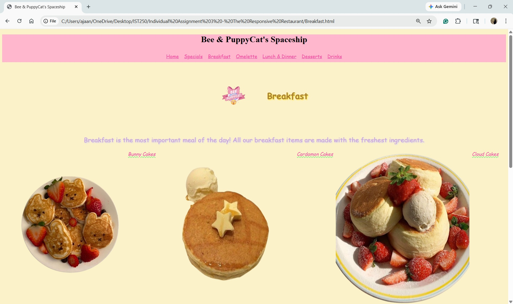

My first favorite assingment was from Lesson 7. This is my resturant menu, I inspired my menu by one of my favorite cartoons, "Bee & Puppycat". I had found images of different foods and drinks, including one of the foods that was actually made in the cartoon, the Deckards curry.
